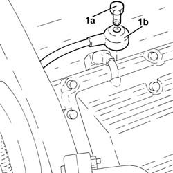

5510C48 timing side knock sensor - r+r
- Path
- Procedures > 55 ELECTRICAL EQUIPMENT > 5510 ENGINE IGNITION > 5510C coil, ecu, sensors > 5510C48 timing side knock sensor - r+r
- Kind
- repair procedure (removal / refitting; the operation number is the code)
- Applies to
- engines: 3.2 V6; all production periods
- Interactive page
- https://sloeber94.github.io/elrnDB-a147/en/#/3025507
Applies to: engines: 3.2 V6; all production periods
 Removing
Removing
 Refitting
RefittingPosition the vehicle on the ramp.
Proceed with removal 4450B02 left front wheel r r .
Proceed with removal 7055B65 Engine compartment DUST PROTECTION in left front wheel arch - R.R. .
Proceed with removal 7055B54 under-engine guard - r r .
Proceed with removal 5530B10 battery - r+r .
Proceed with removal 5530B52 Battery DRIP TRAY/SUPPORT - R.R. .
Proceed with removal 1008C10 power unit upper reaction link r r .
Proceed with removal 1088D24 rigid pipe for coolant inlet to water pump - r + r .
Proceed with removal 1072B42 left hand or right hand inlet manifold (one) - r+r .
Proceed with removal 1056B62 l/h and r/h fuel pipe assembly - with injectors - r + r .
Proceed with removal 1072B12 intake manifold (one) lh or rh - r r and replace gasket .
1. Undo the bolt (1a) and remove the timing side knock sensor (1b).

Applies to: engines: 3.2 V6; all production periods
Refitting
RemovingPlace the timing side detonation sensor back in its housing and fix it tightening the bolt to the recommended torque.
 | Fastening | Component | Ø | Value (daNm) |
|---|---|---|---|---|
- | Bolt | TIMING SIDE KNOCK SENSOR | M8 | (Engine crankcase side) 2.3 ÷ 2.8 |
Proceed with refitting 1072B12 intake manifold (one) lh or rh - r r and replace gasket .
Proceed with refitting 1056B62 l/h and r/h fuel pipe assembly - with injectors - r + r .
Proceed with refitting 1072B42 left hand or right hand inlet manifold (one) - r+r .
Proceed with refitting 1088D24 rigid pipe for coolant inlet to water pump - r + r .
Proceed with refitting 1008C10 power unit upper reaction link r r .
Proceed with refitting 5530B52 Battery DRIP TRAY/SUPPORT - R.R. .
Proceed with refitting 5530B10 battery - r+r .
Proceed with refitting 7055B65 Engine compartment DUST PROTECTION in left front wheel arch - R.R. .
Proceed with refitting 4450B02 left front wheel r r .
Refill the engine cooling system with coolant 0010T20 coolant change .
Proceed with refitting 7055B54 under-engine guard - r r .
Remove the car from the ramps.
Topics linked from this page (11)
- 0010T20 coolant change
- 1008C10 power unit upper reaction link r r
- 1056B62 l/h and r/h fuel pipe assembly - with injectors - r + r
- 1072B12 intake manifold (one) lh or rh - r r and replace gasket
- 1072B42 left hand or right hand inlet manifold (one) - r+r
- 1088D24 rigid pipe for coolant inlet to water pump - r + r
- 4450B02 left front wheel r r
- 5530B10 battery - r+r
- 5530B52 Battery DRIP TRAY/SUPPORT - R.R.
- 7055B54 under-engine guard - r r
- 7055B65 Engine compartment DUST PROTECTION in left front wheel arch - R.R.